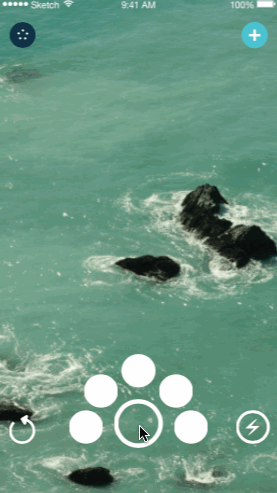
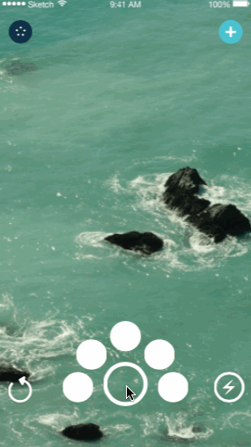

INTUITIVE CONTENT CREATION
Take gorgeous photos and videos straight from the app, and share them directly with all of your closest friends and relatives.
SEAMLESS GROUP CREATION
Create your groups and share the content that matters with them. Instead of shouting to be heard in a sea of content, send it to only the people who will appreciate it, and send it to all of them, quickly.
PAINLESS CONTENT SHARING
No more sorting wading through never ending photo albums, or sifting through people’s timelines to find the photos that you want, relive them all right at your fingertips.
SIMPLE CURATION AND STORAGE
Create beautiful stories which are representative of the moments that matter in each of your communities. Hold on to these moments, and relive them whenever you want.
 
